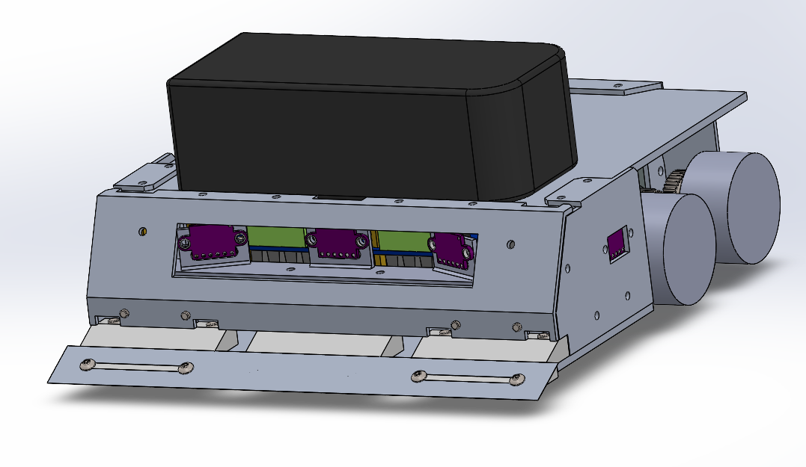
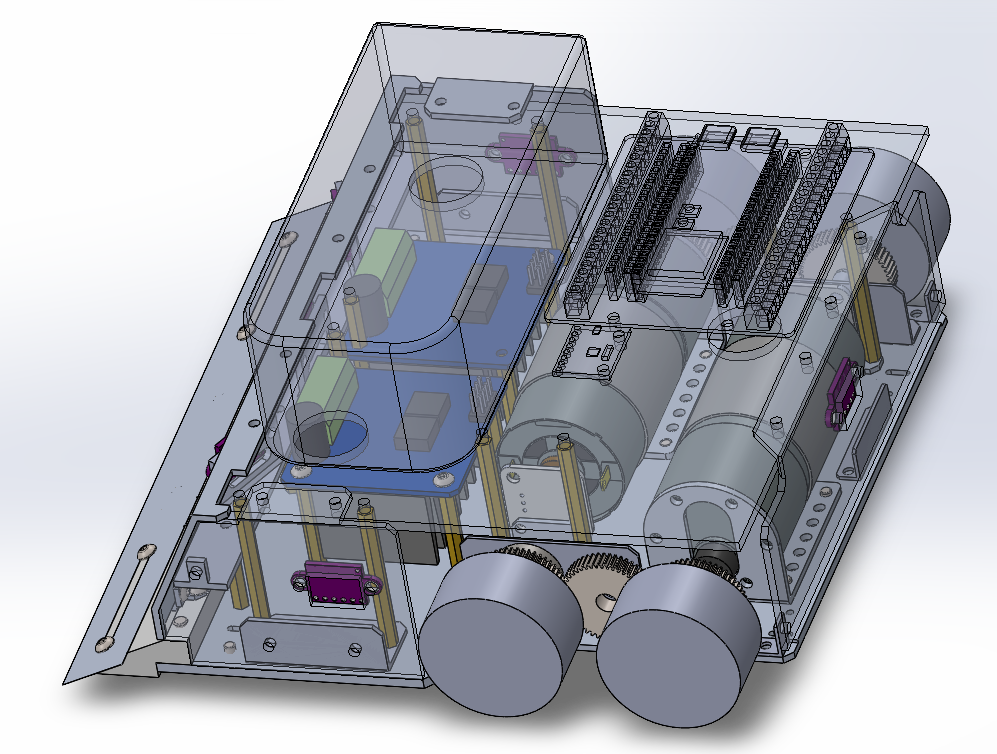
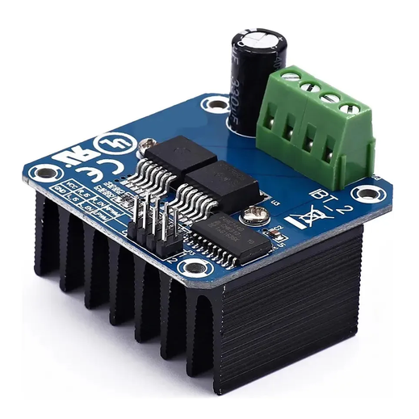
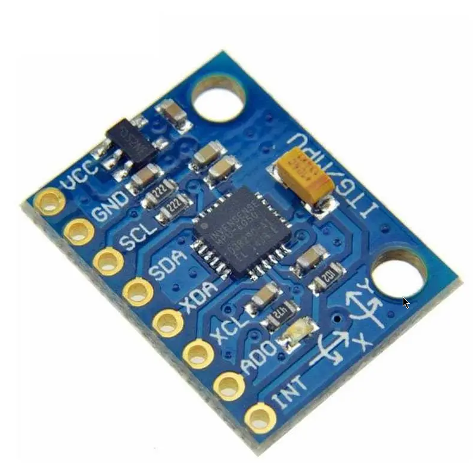
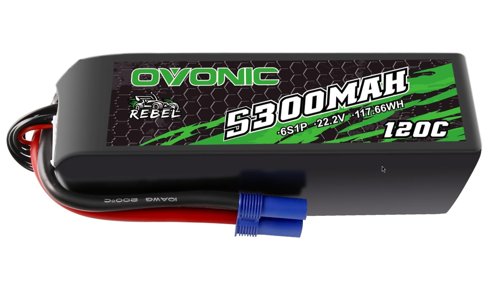
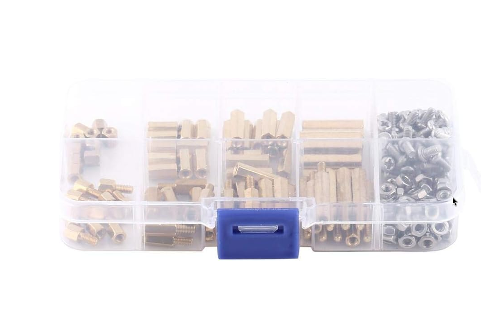
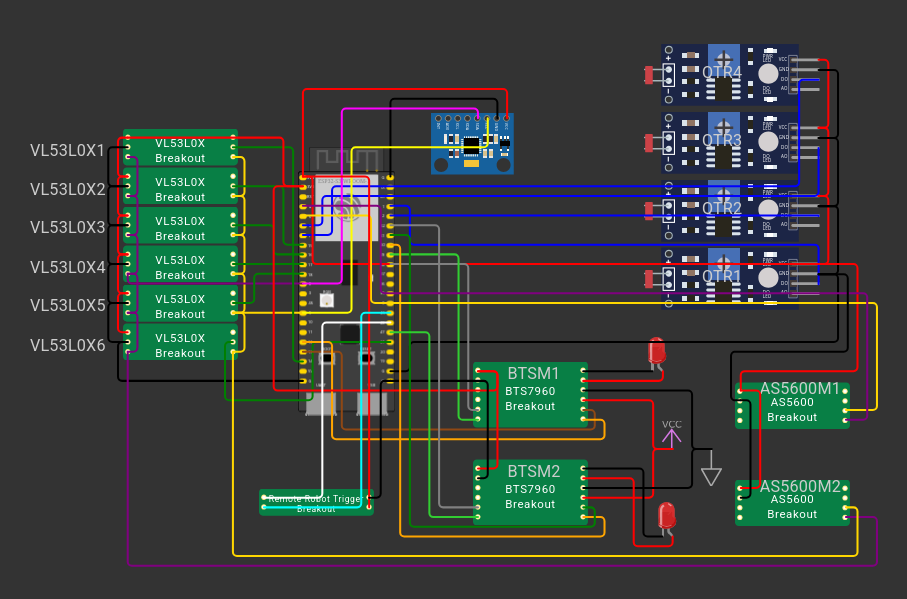

ROBOT SUMO SCHRÖDINGER
Categoria de 3kg
Introducción al proyecto
El robot "Sumo Schrödinger" es un proyecto de robótica que integra habilidades en diseño CAD usando como herramienta principal el programa SolidWorks para el diseño de piezas desde cero, diseño de electronica usando Wokwi como herramienta para crear el diagrama de conexiones, programación que utiliza el framework de ESP-IDF para crear la logica que controla el robot, habilidades en administración las cuales fueron necesarias en la organización del equipo y en la documentación del proyecto, asi como a su vez se requirio de equipo que se encargara de la fabricación y ensamblaje de las piezas del robot.
Requisitos y restricciones de la competencia de robots sumo
- Peso máximo de 3000g
- Dimenciones máximas de 20cm x 20cm sin límite de altura
- Robot totalmente autónomo sin intervención externa
- Uso obligatorio del módulo RRT para el arranque del robot
- Dohyo color negro de 154cm de diametro y un anillo color blanco de 5cm
- Esta prohíbido el uso de componentes que puedan dañar la pista
- No esta permitido jalar o enganchar al oponente
- Esta prohibido lanzar o catapultar cosas
- Cualquier elemento que adhiera al robot a la pista esta prohíbido
Diseño CAD y manofactura
Modelo 3D


Originalmente se creo un diseño base el cual se fue modificando y adaptando a las nuevas ideas que fueron surgiendo durante el proyecto.
Ideas y problemas durante el diseño
En un principio no se tenia definido el como hiba a ser la transmisión de movimiento de los motores a las ruedas, se tomaron en cuenta ideas como usar correas dentadas, usar llantas de oruga, sin embargo al final se opto por usar un tren de engranajes que conectaran cada motor con 2 llantas.
Selección de materiales
Para el diseño del robot sumo se diseño un chasis de aluminio conformado por varias piezas (base, paredes, techo, superficie de cuchilla, etc) las cuales se fabricarón en aluminio debido a su resistencia y dureza en comparacion a piezas de plastico impresas en 3D, en un principio se penso utilizar acero para algunas piezas, sin embargo debido al peso esta idea se tuvo que descartar. El modelo tambien incluye algunas piezas de plastico (PETG), se decidio hacerlas de este material para evitar costos altos en la fabricación del robot, aparte de que eran piezas que no requerian una alta resistencia debido a que no hiban a recibir golpes directos.
Electrónica
Componentes electrónicos usados
- 2x Motor 20kg*cm 500 rpm E-robots
- 2x Bts7960
- Esp32 S3
- Módulo RRT
- 4x Qtr-1a
- 6x vl53l0x
- Mpu6050
- 2x As5600
- OVONIC 6S LiPo Batería 22.2V 5000mAh 120C
- kit espaciadores metálicos








Conexiones
Diagrama de conexiones hecho en Wokwi & lista de conexión de pines de cada componente

BTS7960 #1, 2
- VCC - 5V
- GND - GND
- RPWM1 - GPIO12
- LPWM1 - GPIO13
- RPWM2 - GPIO40
- LPWM2 - GPIO41
- R_EN - 5V
- L_EN - 5V
- B(+) - (+)22.2V
- B(-) - (-)22.2V
- M(+) - (+)Motor
- M(-) - (-)Motor
VL53L0X #1, 2, 3, 4, 5, 6
- VCC - 3.3V
- GND - GND
- SDA - GPIO8
- SCL - GPIO9
- XSHUT1 - GPIO14
- XSHUT2 - GPIO15
- XSHUT3 - GPIO16
- XSHUT4 - GPIO17
- XSHUT5 - GPIO18
- XSHUT6 - GPIO21
AS5600 #1, 2
- VCC - 3.3V
- GND - GND
- SDA1 - GPIO8
- SCL1 - GPIO9
- SDA2 - GPIO4
- SCL2 - GPIO5
MPU6050 #1
- VCC - 3.3V
- GND - GND
- SDA - GPIO8
- SCL - GPIO9
ModR01 #1
- VCC - 3.3V
- GND - GND
- RDY - GPIO48
- GO - GPIO48
QTR1A #1, 2, 3, 4
- VCC - 3.3V
- GND - GND
- OUT1 - GPIO1
- OUT2 - GPIO2
- OUT3 - GPIO6
- OUT4 - GPIO7